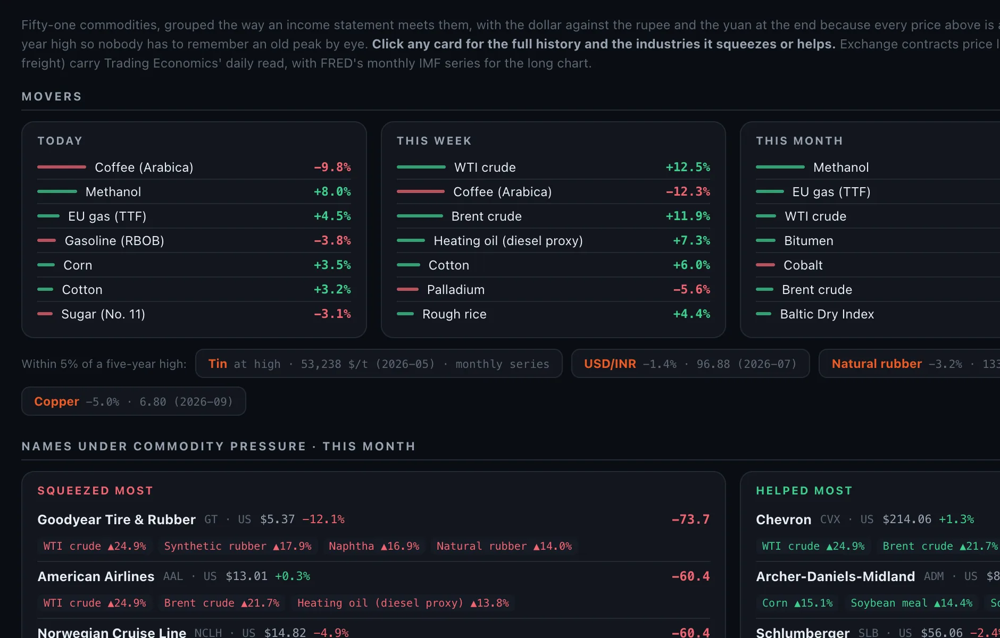
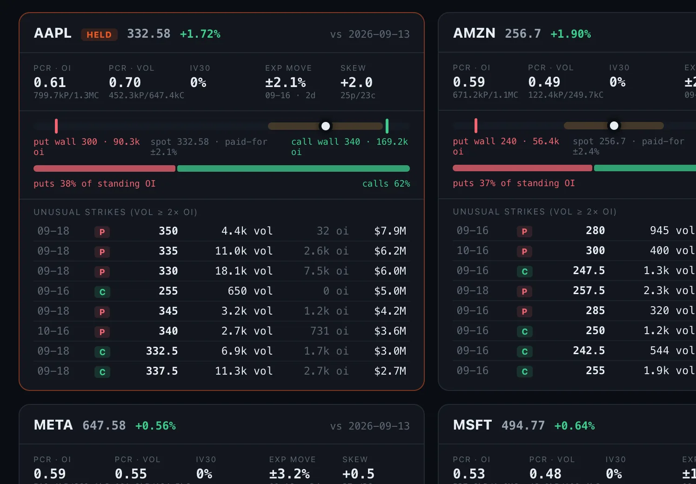
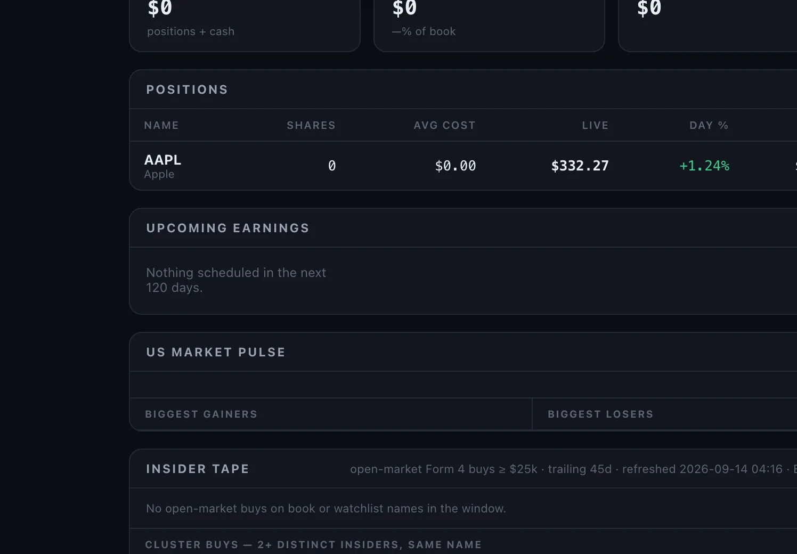
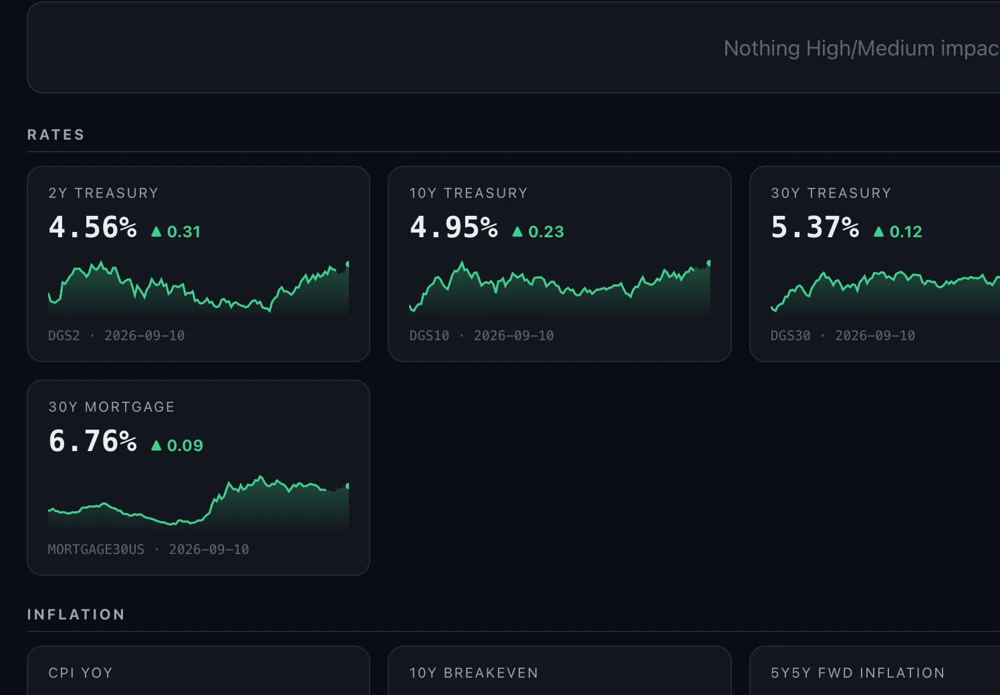
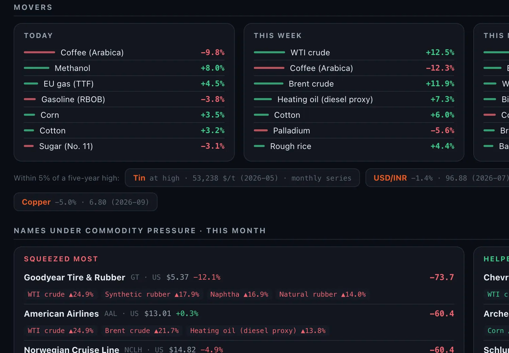
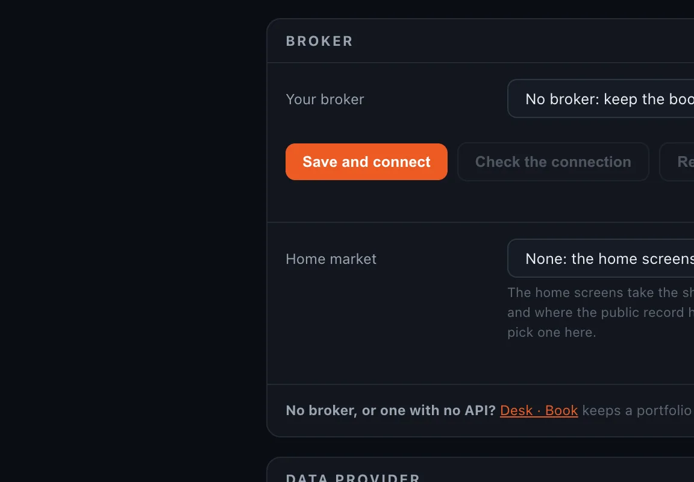

An equity research desk that runs on your own computer.
GreekSoup is open source, it keeps your keys on your own machine, and it places no orders. Twelve of its fourteen screens run with no key at all.
curl -fsSL https://greeksoup.ai/install.sh | bash
irm https://greeksoup.ai/install.ps1 | iex

Squeezes tyre makers, and Goodyear files a 1% move in the price as about $8 million a year. Helps rubber plantations and latex processors.
The Commodities screen, as it opened on 14 September 2026. Companies on the screens are examples.
Fourteen screens, and a page for any ticker.

Flow: the options tape on every US name, from CBOE's delayed chains.



Desk · US, Flow, Macro and Commodities, as they opened on 14 September 2026.
Three of the things the desk draws, from its own data.
One board, sorted by the one-year change, with the industries each move squeezes or helps written on the card. Prices as the desk read them on 14 September 2026, from exchange contracts and public benchmarks. One benchmark, Coking coal (Australia), has no year of history yet and is left out.
The Funds screen reads every 13F-HR straight from SEC EDGAR and compares the two latest filings line by line, so what changed is the first thing on the card. This is Berkshire Hathaway's filing for the quarter ending 30 June 2026, filed 14 August 2026, as the desk read it on 13 September 2026. Names are from a public filing and carry no view.
Flow reads CBOE's free delayed chains on every US name and draws where the open interest stands: the strike with the most puts below the price, the strike with the most calls above it, and the move the options market is paying for. This is Apple as the desk read it on 14 September 2026. It describes positioning and makes no call.
Twelve of the fourteen run with no key at all.
A filled mark means the screen runs on that key. A hollow mark means the key adds rows or columns to it.
Six brokers connect as the desk comes, read-only: Alpaca, ICICI Direct, Interactive Brokers, Tradier, Trading 212 and Zerodha. The market follows the broker, and two markets ship today, India and the United States. Any other broker, and any other market, is one file an AI agent writes to a written contract that sits inside the folder.
Bring your own AI. Fourteen providers are preset, local models among them, and the desk carries a page any AI agent on your computer can read, so the agent answers about your book and not about a stranger's.
One line installs it.
curl -fsSL https://greeksoup.ai/install.sh | bash
irm https://greeksoup.ai/install.ps1 | iex
- On a Mac, open Terminal (press Command and Space, type Terminal, press Enter). On Windows, open PowerShell. Paste the line and press Enter.
- It finds Python on your computer, or installs it.
- It downloads the desk into a folder called GreekSoup in your home folder and installs what it needs into that folder and nothing else.
- It sets the desk to start with your computer.
- It opens the desk in your browser, at an address only your own computer can reach.
Keys are optional. When you want one, the Settings screen inside the desk takes it and keeps it on your computer; you never open a file.

Read README.md in this folder and set the desk up for me on this computer. Install what it needs, ask me for each key one at a time and tell me where to get it, and if I say I have no broker to connect, leave the broker keys empty. Then start the desk, set it to start by itself whenever I log in, and tell me the address to open.
- Download the folder from GitHub, unzip it, and drag it into Documents. The download.
- Open that folder in your agent: Claude Code, Codex, Kimi Code, Grok Build, or whichever you use. If you have none yet, search for how to install one; it is two or three steps.
- Paste the text above and press Enter. The agent installs what it needs, asks for your keys one at a time, starts the desk and gives you the address.
If anything goes wrong at any step, give the agent the README and describe the problem in your own words. That is the same method that built the desk.
git clone https://github.com/shubhamsborkar/one-person-equity-research-desk.git
cd one-person-equity-research-desk
python3 -m venv .venv && source .venv/bin/activate
pip install -r requirements.txt
python server.py
One Python file serves the fourteen screens, the lists you edit are plain text files in the data folder, and everything specific to a broker sits in one file per broker. The file map, the data sources and how the update works are in TECHNICAL.md.
It updates itself.
Once a day the desk looks at GitHub. When a newer version exists, a strip appears at the top of every screen with the date and what changed, and one click brings it in. Your keys, your lists and any file your agent changed for you stay exactly as they are, and the desk restarts by itself.

GreekSoup is the research desk we use every day, built with Claude Code from plain-English descriptions and published so that you can run the same desk on your own computer, with your own keys, and change it by describing what you want. The edition that walks through every screen and the build is on the newsletter.
- 2026-09-13.8currentNothing in the desk assumes one broker or one country any more
- 2026-09-13.7Your broker, your data provider, your AI, all picked from a list with nothing assumed
- 2026-09-13.6Settings grows three sections
- 2026-09-13.5A Settings screen inside the desk
- 2026-09-13.4After an update the page reloads itself once the desk is back, and only names the folder to open if the desk has not come back in ninety seconds
- 2026-09-13.3Desk · Home now says how to connect a broker (by hand on Desk · Book, the shipped adapter, or any broker through your agent) and speaks of the
- 2026-09-13.2One-line install for Mac, Linux and Windows (finds or installs Python, downloads the desk, sets it to start with your computer, opens it)
- 2026-09-13.1The desk is now called GreekSoup
Read from VERSION on GitHub, the same file your desk reads when it checks for an update.
For analysts who refuse to settle.